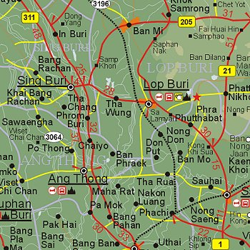
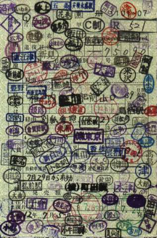

Friday, July the 9th, 2004
back to: title, date or indexes
A week ago, on Friday 2nd July, we looked at some interesting lops. Here are two more. Lop Buri in Central Thailand, formerly known as Lawo, was one of the important ancient towns of the Khmers from the 10th to the 13th centuries. Many Khmer ruins are found in and around this town. During the Ayutthaya period, King Narai the Great established Lop Buri as the second capital with the help of French architects. Most of the architecture of that time reflects the mixture of Thai and Western styles. Here is a handy map:

Map of Lop Buri (left); Project Lop (right)
There is also the tantalising Project Lop, which has its own website. It's a shame I do not read Japanese. If I did, I would be able to glean the purpose of the project which, given the graphic above, is clearly something Dobson ought to have written a pamphlet about.